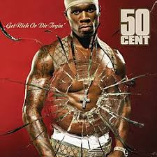
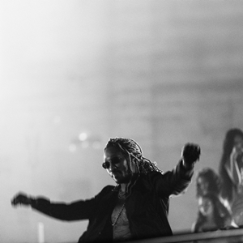
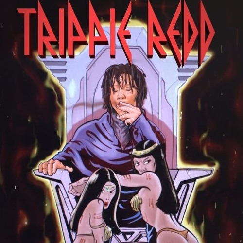

📝 Eseji i Pogledi
Analize albuma i uticaja muzičkih velikana:
-

„Get Rich or Die Tryin’“ – Za mene, ovaj album je više od muzičkog dela — to je odraz neprekidne borbe, ulice i ambicije koja gori u svakom čoveku koji se ne predaje. Kada slušam 50 Centa na ovom albumu, osećam njegovu iskrenost i sirovu energiju koja ne skriva nikakve rane ni slabosti. Pesme poput „In Da Club“ su mi simbol snage i slavlja uspeha, ali i opomena da put do tog uspeha nije lak. „Many Men“ me podseća na mračne trenutke i prepreke koje treba savladati, ali i na to da se kroz sve može proći ako si spreman da se boriš. Ovaj album me motiviše da nikada ne odustajem, čak ni kad okolnosti deluju protiv mene, jer u 50 Centu vidim primer istrajnosti i autentičnosti koja ne pristaje na kompromise.
-

„Death Race for Love“ – Ovaj album za mene je kao putovanje kroz najintimnije i najmračnije kutke ljudske psihe, a Juice WRLD je vodič koji bez straha otkriva svoje rane i slabosti. Njegova muzika nije samo zabava, već emotivna oluja koja me tera da se suočim sa sopstvenim borbama. Njegova iskrenost, izražena u pesmama poput „Robbery“ i „Hear Me Calling“, duboko rezonuje jer se bavi stvarima koje su često tabu — zavisnostima, gubitkom, ljubavnim bolom. Za mene je ovaj album dokaz da je moguće biti ranjiv i jak u isto vreme, i da kroz muziku možeš pronaći utehu i razumevanje, čak i kad se svet čini nepodnošljivim. Juice WRLD mi je bio glas koji je govorio ono što retko ko sme, i zbog toga će njegova umetnost zauvek imati posebno mesto u mom srcu.
-
„So Much Fun“ – je za mene album koji slavi slobodu, kreativnost i nesputanu umetničku energiju. Young Thug je jedinstven jer ne pristaje na ustaljene norme, već koristi svoj glas i stil da stvori nešto potpuno originalno i nepredvidivo. Kada slušam njegove pesme, osećam kako me poziva da i ja istražujem svoje granice, da budem drugačiji i da ne brinem o očekivanjima drugih. Njegova sposobnost da spoji različite žanrove i emocije u harmoničnu celinu je fascinantna, a njegova muzika me ispunjava i radošću i refleksijom. „So Much Fun“ mi je podsetnik da umetnost treba da bude slobodna, da ne treba da postoji „pravo“ ili „pogrešno“, već da svako treba da pronađe svoj glas i izrazi ga onako kako oseća.
-

„High Off Life“ – je ogledalo kompleksnosti života u savremenom svetu — sa svim usponima, padovima, trenucima euforije i introspektivnim krizama. Future kroz ovaj album pokazuje koliko je moguće biti ranjiv i jak, uspešan i izgubljen, slavljen i kritikovano. Pesma „Life Is Good“ me podseća da je život pun kontrasta i da uspeh ne donosi uvek samo sreću, već i nove izazove. Ovaj album mi donosi osećaj realnosti koja nije samo glamur, već i borba sa sobom, sa prošlošću i budućnošću. „High Off Life“ je soundtrack za one koji žive brzo, ali i za one koji tragaju za smislom i ravnotežom, i u tome pronalazim duboku povezanost sa njegovom muzikom.
-

„A Love Letter to You“ – Ovaj album za mene je izraz sirove, nefiltrirane emocije i eksperimentisanja sa zvukom. Trippie Redd na ovom projektu ne skriva svoje unutrašnje sukobe, već ih iznosi kroz muziku koja kombinuje agresiju, ranjivost i melodičnost. „Love Scars“ posebno mi je važna jer osećam kroz nju njegovu iskrenost i borbu sa bolom, što me podseća koliko je važno biti emotivno otvoren. Ovaj album je za mene oličenje autentičnosti i hrabrosti da se bude drugačiji, da se prihvate sve strane ličnosti i da se kroz umetnost pronađe način za isceljenje i izražavanje. Trippie Redd mi je pomogao da razumem koliko muzika može biti lična i univerzalna u isto vreme.
-

„Justice“ – je za mene album koji pokazuje transformaciju i zrelost, ali i želju da se kroz muziku šire pozitivne poruke i nada. Justin Bieber sa ovim albumom ne samo da pokazuje svoj muzički rast, već i da je spreman da se suoči sa sopstvenim greškama i da inspiriše druge da rade isto. Pesme poput „Peaches“ i „Holy“ donose mi osećaj optimizma i vere u bolje sutra, i podsećaju me da je moguće kroz umetnost graditi mostove i širiti ljubav. Ovaj album mi je važan jer pokazuje da svako može rasti i menjati se, i da umetnost može biti sredstvo za izlečenje i povezivanje sa ljudima.
-

„Life of a Dark Rose“ – je iskren pogled u mladalačku dušu koja je istovremeno ranjiva i borbena. Lil Skies kroz ovaj album govori o ličnim iskustvima, usponima i padovima, i to na način koji je autentičan i pristupačan. Njegova muzika mi pruža osećaj zajedništva, kao da nisam sam u svojim osećanjima i borbama. Melodije i tekstovi su spoj koji uspeva da prenese istinu mladosti, sa svim njenim kontradiktornostima. „Life of a Dark Rose“ me podseća koliko je važno slušati glas mladih i njihove priče, jer one često nose poruke koje zaslužuju da budu saslušane i shvaćene.
-
„Wild West“ – Ovaj album doživljavam kao snažan glas londonske scene koji ne beži od stvarnosti. Central Cee je svojim tekstovima i energijom uspeo da prenese autentičnu priču o životu i izazovima u urbanom okruženju, što me duboko pogađa i inspiriše. „Wild West“ mi pruža pogled u svet koji često nije vidljiv kroz medije, ali koji je stvaran i pun života. Ovaj album mi je podsetnik na važnost iskrenosti u umetnosti i na moć muzike da bude glas onih koji inače nemaju priliku da budu saslušani. Cenim što Central Cee ostaje veran sebi i svojoj zajednici, a njegova muzika me motiviše da razumem i poštujem različite perspektive i priče.